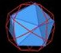
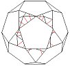
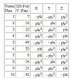
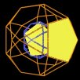
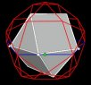

Dr. Marivn Solit has been exploring polyhedral and other structures and has discovered many interesting relations. I am working with Marvin to help document his work and to help explore associations with other's work.
Marvin has used Zome Tool a lot for his explorations and modeling of structure. He has also used other modeling kits and systems, some of which are available through Design Science Toys.
Your comments would be appreciated.
|
Icosahedra edge - Calculations of the Icosahedra edge length w.r.t. the 30-Verti edge length. (03-04-2004) |
|  | Icosahedra in 30-Verti - 5 Icosahedra defined by mid-edge points of 30-Verti. (03-01-2004) |
|  | Lesson 1 - Building the VE and the 30-Verti. (04-19-2003) |
|  | 30-Verti Data - Tabulation of some of the 30-Verti properties. (04-20-2003) |
|  | Internal/External Structure - Looking at the internal and external pentagons of the 30-Verti and their transformations. (05-06-2003) |
|  | 5 VE in the 30-Verti - Here I show how Marvin fits 5 VEs into the 30-Verti. (05-07-2003) |
This work is copyrighted, 2003 by Robert W. Gray and Marvin Solit.
You may not use any of this material, nor any material on our linked web pages,
without first obtaining written permission.